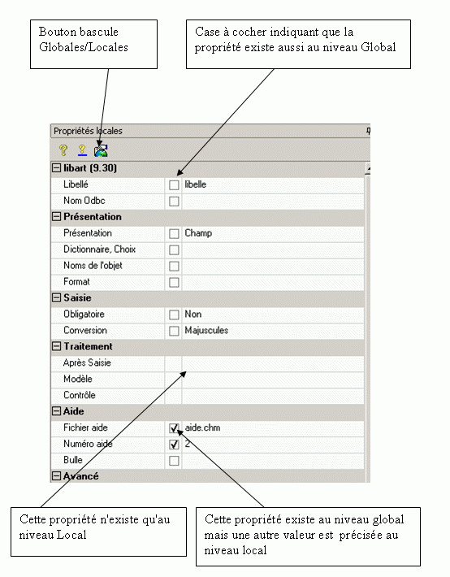

Les propriétés des tables et des champs sont scindées en deux groupes : les propriétés globales et les propriétés locales.
Propriétés globales
Ces propriétés sont indépendantes de l'emplacement de l'objet. Par exemple, la nature d'un champ est une propriété globale. Quel que soit la table contenant le champ, sa nature est toujours la même. Et une modification de la nature d'un champ entraîne la modification des toutes les tables où ce champ est présent.
Propriétés locales
Ces propriétés dépendent de l'emplacement de l'objet. On distingue deux cas :
La propriété n'existe pas au niveau global. Par exemple, les traitements pour un champ n'existent pas au niveau global. Un traitement pour un champ, n'existe que pour un champ dans une table. Le même champ placé dans différentes tables peut avoir des traitements différents.
La propriété existe au niveau global. Par exemple, le numéro d'aide associé au champ est dans les propriété globales. Cette propriété peut être masquée par une autre valeur qui sera saisie dans les propriétés locales.
Ces propriétés sont reconnaissables par la présence d'une case à cocher. Pour saisir une telle propriété (et donc masquer la valeur saisie au niveau global) il faut préalablement cocher cette case.
En fonction du mode sélectionné par le bouton  de la barre d'outils de la fenêtre des propriétés, la liste des propriétés change. Les propriétés qui n'existent pas au niveau demandé ne sont pas affichées.
de la barre d'outils de la fenêtre des propriétés, la liste des propriétés change. Les propriétés qui n'existent pas au niveau demandé ne sont pas affichées.
